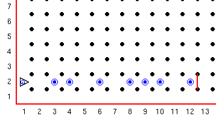
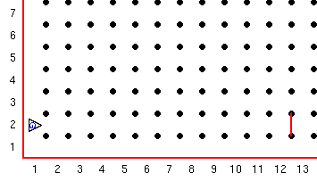

Toen Guido nog een tiener was, was hij nogal opstandig. Zijn ouders zeiden tegen hem: doe dit, doe dat, linksaf, rechtsaf. Op een dag zei Guido "Stop, ik kan mijn eigen beslissingen nemen!" en vertelde hoe hij zijn beslissingen kon nemen.
Hij vertelde over logische (boolean) expressies, welke uitsluitend "waar" of "niet waar" konden zijn. Guido kan diversen dingen doen afhankelijk van de uitkomst van zo'n expressie. De waardes "waar" en "niet waar" worden ook vaak aangegeven met 1 en 0, dus "niet waar" is gelijk aan 0 en "waar" is gelijk aan 1.
Hier is een voorbeeld van zo'n expressie:
als naast_een_pieper:
pak_pieper
Dus, als Guido wel naast een pieper staat, is de expressie "naast_een_pieper" waar, en wordt pak_pieper uitgevoerd.
Als Guido niet naast een pieper staat is de expressie niet waar en wordt er verder gegaan na het code blok. Guido heeft de mogelijkheid om zijn wereld te verkennen en daar naar te handelen al gelang de uitkomst van een expressie.
Deze expressies heeft hij tot zijn beschikking:
| Muur tests: | |
| voorkant_is_vrij | Waar als er geen muur recht voor hem staat. niet waar als er wel een staat. |
| voorkant_is_versperd | Waar als er een muur recht voor hem staat. niet waar als er geen staat. |
| links_is_versperd | Waar als er een muur links van hem staat. niet waar als links vrij is. |
| links_is_vrij | Waar als er geen muur links staat. niet waar als links versperd is. |
| rechts_is_vrij | Idem als bij links. |
| rechts_is_versperd | Idem als bij links. |
| pieper tests: | |
| naast_een_pieper | Waar als Guido op dezelfde kruising staat als een pieper (op een pieper staat) |
| niet_naast_een_pieper | Waar als Guido niet op dezelfde kruising staat als een pieper. |
| enige_piepers_in_piepertas | Waar als er tenminste nog een pieper in de pieper zak zit. |
| geen_piepers_in_piepertas | Waar als er geen piepers meer in de pieper zak zitten. |
| richting tests: | |
| naar_noord | Waar als Guido richting het noorden staat. Anders niet waar. |
| niet_naar_noord | Waar als Guido niet naar het noorden staat. Anders niet waar. |
| naar_zuid | De rest spreekt voor zich, |
| niet_naar_zuid | |
| naar_oost | |
| niet_naar_oost | |
| naar_west | |
| niet_naar_west | |
Opdracht:
Guido heeft op weg naar school allerlei troep op straat gegooid en nu moet hij het uiteraard zelf gaan opruimen.
Maak een wereld waarin een aantal piepers verspreid liggen over de 2e straat tussen de 1e laan en de muur op de oost hoek van de 12e laan. Er kan maar een pieper op een kruising liggen, maar op een kruising kan wel of geen pieper liggen. Guido moet beginnen op de kruising van de 1e laan en de 2e straat richting Oost.
Een begin situatie moet er ongeveer zo uitzien:

Laat Guido de 2e straat aflopen en ondertussen alle rotzooi oppakken. Denk eraan dat wanneer je Guido een pieper wilt laten pakken als er geen is dan zal hij zichzelf uitschakelen en stopt het programma. Gebruik een van de bovenstaande tests om te testen of er een pieper is of niet. Als hij aan het einde is gekomen moet hij met alle piepers weer terug gaan naar waar hij begon en weer in de start richting staan.
Dit moet de eind situatie zijn:

Deze serie Guido van Robot lessen zijn geschreven door
Roger Frank.
Commentaar and suggesties over deze lessen kunnen gestuurd worden naar
Stas Zytkiewicz die de lessen
vertaalde naar het Nederlands.
De orginele lessen zijn te vinden op de
Guido van Robot website.
Copyright
© 2003 Jeffrey Elkner.
© 2007 Stas Zytkiewicz.